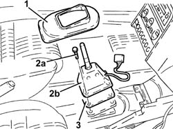

2127A12 hand lever of manual gearbox with hydraulic selection - r r
- Path
- Procedures > 21 GEARBOX > 2127 ELECTRO-HYDRAULIC SELECTION. GEARBOX EXTERNAL. CONTROLS > 2127A hydraulic transmission external linkage > 2127A12 hand lever of manual gearbox with hydraulic selection - r r
- Kind
- repair procedure (removal / refitting; the operation number is the code)
- Applies to
- engines: 2.0 TS, 3.2 V6; all production periods
- Interactive page
- https://sloeber94.github.io/elrnDB-a147/en/#/3025137
Applies to: engines: 2.0 TS; all production periods; only with equipment: Cambio robotizzato
2127A70 support for control levers for manual gearbox with hydraulic selection and handbrake - r r because in order to be able to remove the handbrake lever, the support for the gear lever has to be detached and the assembly should then be dismantled at the bench.
Applies to: engines: 3.2 V6; all production periods; only with equipment: Cambio robotizzato
 Removing
Removing
 Refitting
RefittingEnsure that the ignition key is in the OFF position, then disconnect the negative battery terminal (-).
 | Name | Connector |
|---|---|---|
- | Battery |
Proceed with the removal 7040A65 passenger compartment box lock , one , r r (Left and right sides).
Proceed with removal - 7040L37 gear lever plate - r r .
Proceed with removal 7065C42 ashtray (one) r+r .
Proceed with removal 7040L20 tunnel trim - r r .
1. Disconnect the electrical connection for the electro-hydraulic selection manual gear lever.
| Name | Connector |
|---|---|---|
1 | Gear controls |

Applies to: engines: 3.2 V6; all production periods; only with equipment: Cambio robotizzato
1. Undo the bolts (1a) and remove the air supply duct to the rear passengers (1b).

Applies to: engines: 3.2 V6; all production periods; only with equipment: Cambio robotizzato
1. Remove the protection
2. Undo the bolts (2a) and remove the electro-hydraulic selection manual gear lever (2b).
3. Remove the spacer.

Applies to: engines: 3.2 V6; all production periods; only with equipment: Cambio robotizzato
Refitting
RemovingPlace the spacer back in its housing.
Place the electro-hydraulic selection manual gear lever back in its housing and fix it using the bolts.
Refit the protection.
Place the air supply duct to the rear passengers back in its housing and fasten it using the bolts.
Connect the electrical connection for the electro-hydraulic selection manual gear lever.
Proceed with refitting. 7040L20 tunnel trim - r r
.Proceed with refitting 7065C42 ashtray (one) r+r .
.Proceed with refitting - 7040L37 gear lever plate - r r .
Proceed with the refitting 7040A65 passenger compartment box lock , one , r r (Left and right side).
Connect the negative (-) battery terminal
Topics linked from this page (6)
- 2127A70 support for control levers for manual gearbox with hydraulic selection and handbrake - r r
- 7040A65 passenger compartment box lock , one , r r
- 7040L20 tunnel trim - r r
- 7065C42 ashtray (one) r+r
- A1B Battery ( Connectors )
- H37 Gear controls